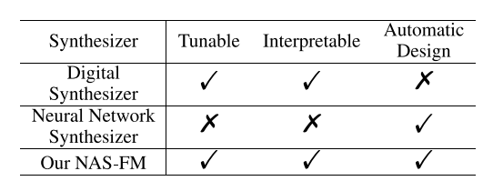
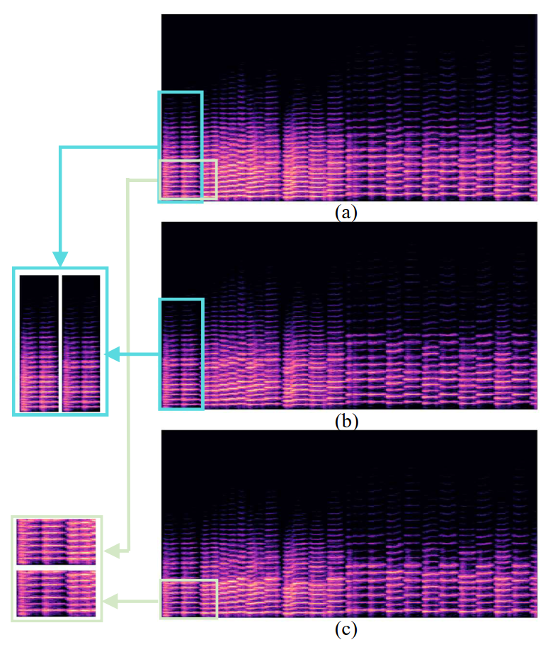

NAS-FM: Neural Architecture Search for Tunable and Interpretable Sound Synthesis based on Frequency Modulation
Abstract
Developing digital sound synthesizers is crucial to the music industry as it provides a low-cost way to produce high-quality sounds with rich timbres. Existing traditional synthesizers often require substantial expertise to determine the overall framework of a synthesizer and the parameters of submodules. Since expert knowledge is hard to acquire, it hinders the flexibility to quickly design and tune digital synthesizers for diverse sounds. In this paper, we propose "NAS-FM", which adopts neural architecture search (NAS) to build a differentiable frequency modulation (FM) synthesizer. Tunable synthesizers with interpretable controls can be developed automatically from sounds without any prior expert knowledge and manual operating costs. In detail, we train a supernet with a specifically designed search space, including predicting the envelopes of carriers and modulators with different frequency ratios. An evolutionary search algorithm with adaptive oscillator size is then developed to find the optimal relationship between oscillators and the frequency ratio of FM. Extensive experiments on recordings of different instrument sounds show that our algorithm can build a synthesizer fully automatically, achieving better results than handcrafted synthesizers.

Comparison with Manually-Designed FM Synthesizers
The below audio samples show the comparison between DDX7, and NAS-FM.
Sample 1:Violin
| DDX7 (Manually-Designed) | NAS-FM (Automatically) |
|---|---|
Sample 2:Trumpet
| DDX7 (Manually-Designed) | NAS-FM (Automatically) |
|---|---|
Sample 3:flute
| DDX7 (Manually-Designed) | NAS-FM (Automatically) |
|---|---|
Tuning of Learned FM synthesizers
Example of timbre interpolation. The below audio sample shows the interpolation result between the violin and the trumpet.
Examples of sound morphing.
The top figure is the synthesized sound of the trumpet. In the middle and bottom figures, we morph the sound by tuning a certain parameter in our NAS-FM.

| Original (a) | Morph 1 (b) | Morph 2 (c) |
|---|---|---|